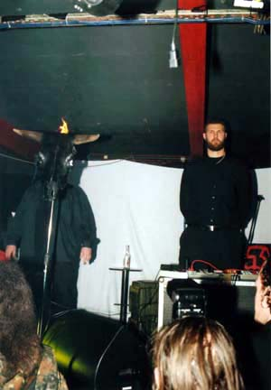
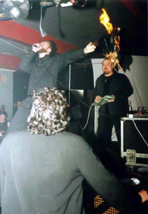
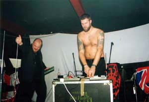

MZ.
412
MZ.
412
Условия информационного вакуума, доверие, опирающееся исключительно на названия альбомов и их звучание, породили миф о проекте MZ 412, как о действительно неординарном явлении в темном искусстве андеграунда. Его творчество долгое время пересекается с Именем Дьявола.
Но знает ли Дьявола тот, кто за этим стоит? Или лишь использует Его Имя, стремясь при этом быть богом в своей собственной вселенной?
Все, что было сделано этим креативным человеком в его творчестве, было сделано вовремя и правильно. Воистину конъюнктура – страшная сила.
CONTRA DEI не умаляет уникальности творчества данного проекта и его влияния на неискушенного слушателя. И мы не решаем за вас: что правда, а что нет. Мы лишь предлагаем ее узнать. И на этих страницах мы представляем вам талантливого декоратора и мистификатора.
История проекта:
MZ. 412 – был сформирован в конце 80-х под оригинальным названием Mashinen Zimmer. 1990 – первый полноформатник «Macht durch Stimme» на лейбле Dark Vinyl.
1995 – после длительного перерыва выходит очередная работа коллектива – «In Nomine dei nostri Satanas Luciferi Excelsi» на лейбле Cold Meat Industry.
 1996 – новый альбом «Burning the Temple of god».
1996 – новый альбом «Burning the Temple of god».
1997 – две работы: LP «Nordic Battle Signs», а также 7"EP «Legion Ultra» ограниченным тиражом – 412 копий на белом виниле, 412 копий – на чёрном виниле.
2001 – Cold Meat Industry переиздаёт второй альбом «Malfeitor» в формате CD.
2002 – новая работа «Domine Rex Inferum»
Сейчас группа готовит к изданию новый альбом – «Infernal Affairs», который планируется издать в виде бокса из 4 виниловых пластинок.
Действующие лица:
Henrik Nordvargr Bjorkk – Folkstorm, Toroidh, HH9, Nordvargr/Drakh, Nordvargr, Sleep Therapy, Muskel, Incinerator International.
Drakh – Beyond Sensory Experience, Al - Wahaar Dhin.
Ulvthram - Econocon, Alko.
 CONTRA DEI: Говоря Nordvargr, подразумеваем множество…MZ. 412, Folkstorm,
HH9…
CONTRA DEI: Говоря Nordvargr, подразумеваем множество…MZ. 412, Folkstorm,
HH9…
Пожалуйста, продолжи список и ответь, в чем причина идти одновременно столь разными путями? Это твоя беспокойная активность или же разные лица тебя самого? Кто есть подлинный Nordvargr?
Nordvargr: Я постоянно работаю над записью и причина столь многих различных проектов в том, что я работаю в разных стилях. Вот некоторые мои проекты и нынешнее положение дел в них:
MZ. 412 – в настоящее время мы работаем над бокс-сетом «Infernal Affairs». Работа заняла огромное количество времени, в основном из-за того, что некоторые участники проекта разъехались по разным частям Швеции.
Nordvargr – я работаю над многими проектами, над записью dark-ambient, а также экспериментирую с электронными машинами и полевыми записями. Сюда же войдут новые записи, сделанные совместно с Drakh из MZ. 412 и кое-какие тяжелые bass/drone элементы.
Toroidh – третий cd «Testament» выйдет примерно в то самое время, когда опубликуется это интервью. Двойной миньон «Start Over» также должен выйти в апреле при содействии Neuropa Records.
Folkstorm мертв. Я имею в виду то, что больше не записываю ничего для этого проекта. Cold Spring Records в скором времени все-таки выпустят «Folkstorm Sweden», который пролежал на их полках несколько лет.
Hydra Head 9 (HH9) – второй альбом «Kod» только что был выпущен Old Europe Cafe, идет работа над новым материалом. Сейчас HH9 представляю только я, с тех пор, как Mr Halibot принял решение работать над сольным проектом.
Что же, осталось добавить лишь названия проектов, с которыми я сотрудничаю и которым оказываю помощь. Вот некоторые из них: Slogun, NTT, Maldoror Kollective и греческая Black Metal группа Naer Mataron.
CD: Пожалуйста, опиши несколькими словами послание каждого альбома MZ. 412.
N: Есть лишь одно послание, которое проходит через все альбомы MZ. 412: следуй своим собственным путем и не сгибайся ни перед чем. Ты есть бог в своей собственной вселенной.
CD: Как ты считаешь, твоя деятельность эффективна? Если да, то соответствует ли эффект твоим идеям?
N: Если ты имеешь в виду распространение моего творчества среди масс, то я должен сказать, что спустя годы это стало эффективно. Мне посчастливилось получить поддержку многих лейблов и людей, которые способствуют распространению моей музыки во всем мире.
(Данный вопрос не подразумевал коммерческий успех и благополучие MZ 412, которые и без того хорошо известны. Ред.)
CD: Как бы ты определил свой статус в этом мире: жертва, заговорщик, орудие разрушения, поджигатель, враг…? Твои комментарии?
N: Я заговорщик и диверсант. На пути, я – Легион Гидры.
CD: Каковы цели MZ. 412? Твои личные цели?
N: Цель – создавать музыкальные шумовые пейзажи, которые воздействовали бы на людей. Личным здесь выступает опыт. Моя личная цель – реализовать себя и с помощью звука развивать и проявлять моих демонов.
CD: Что вдохновляет тебя на творчество?
N: У меня есть побуждение творить, и это – единственное, что вдохновляет меня. Я не вижу лучшего объяснения, чем просто сказать, что я заряжен своей креативностью.
CD: Что значит Сатанизм в твоем понимании? Что никогда нельзя назвать Сатанизмом?
N: Сатанизм может означать многое, от детского бунта против мира взрослых и безумных актов насилия до идеологии самореализации. Лично я рос сильным разумом и телом на протяжении всех лет и мне не нужна догма или «инструкция», как прожить мою жизнь. Я сам себе хозяин и правлю своей жизнью соответственно.
CD: Если тебя попросили бы объяснить природу Зла, какими бы словами ты смог бы это сделать?
N: Не могу ответить на этот вопрос. Зло содержит в себе многое, в зависимости от точки зрения. Это не имеет соответствия.
CD: Кто есть Дьявол в твоем понимании?
N: Нет Дьявола. Это лишь христианская пропаганда страха.
CD: Несколько слов, которые ты сказал бы богу?
N: Нет бога. Если бы даже он и был, то я не думаю, что он стал бы меня слушать.
 CD: Что ты можешь сказать о ненависти? Каково ее высшее проявление?
CD: Что ты можешь сказать о ненависти? Каково ее высшее проявление?
N: Ненависть – естественное чувство, как и любовь. Ненависть не нужно подавлять, но нужно давать ей выход.
CD: Твое отношение к человеческой расе? Какая судьба ждет ее?
N: Я думаю, что лучше всего об этом сказано в фильме «Matrix»: человечество это вирус, паразитирующий на этой земле. (Цит. Ред. – Агент Смит – «Я бы хотел поделиться откровением, пока у меня есть время. Это откровение пришло ко мне, когда я пытался классифицировать ваш вид. Я понял, что вы фактически не являетесь млекопитающими. Каждое млекопитающее на этой планете, инстинктивно достигает естественного равновесия с окружающей средой, но вы, люди, – нет. Вы занимаете территорию, и вы размножаетесь и размножаетесь до тех пор, пока все естественные ресурсы не будут потреблены. Единственной возможностью выживания для вас является распространение на другую территорию. Есть другой организм на этой планете, который поступает тождественно. Вы знаете что это? Вирус. Человеческие существа это болезнь, рак этой планеты. Вы чума, а мы исцеление, лекарство.»)
Мы медленно разрушаем самих себя, и до тех пор, пока мы, как все человечество не разберемся с проблемой перенаселения и др., мы – обречены.
CD: Чему ты посвятил бы свой последний час на земле?
N: Хорошему вину и семье.
CD: Но ведь все может быть не так просто, как тебе хотелось бы. Просто представь: твоя семья мертва и нет хорошего вина…
N: Отсутствие вина - это будет просто страшно, действительно ужасно…
Серьезно говоря, если это случится, я знаю, что у меня много друзей и союзников, которые поддержат меня.
CD: Назови какую-нибудь историческую или мифологическую личность, достойную быть названной великой?
N: Алистер Кроули – гений.
CD: Сила, власть – что это?
N: Тоже трудный вопрос. И в том и в другом – многое. Инстинкт подсказывает мне, что власть это контроль. Силу очень трудно определить…
 CD: Боишься ли ты смерти? Что для тебя более неприятно – медленное умирание
или насильственная смерть?
CD: Боишься ли ты смерти? Что для тебя более неприятно – медленное умирание
или насильственная смерть?
N: Я не боюсь смерти – с какой стати я должен боятся того, чего мне не избежать.
Для меня более неприятным является медленное умирание – концепция «смерти сражаясь» для меня более близка.
CD: Если бы у тебя не было возможности заниматься музыкой, чтобы ты делал вместо этого? Был бы обычным червем?
N: Я не знаю… Скорее всего, я бы пытался выразить себя другими способами – у меня очень креативный разум. Возможно, я бы занялся искусством, рисовал бы гротескные картины и т.д.
CD: Когда ты был более честен, сейчас или скажем пять лет назад?
N: Сейчас. Я знаю себя лучше, понимаю свои желания, стремления и инстинкты.
CD: Что для тебя означает честность?
N: Быть честным с тем, кого любишь и с самими собой.
CD: Твое понимание Сатанизма и твое участие в этом явлении, насколько все это изменилось? Этот процесс похож на взросление или на увядание Огня?
N: Для меня Сатанизм имеет меньшее значение сегодня, нежели, скажем, 10 лет назад. Главным образом, потому что я пришел к пониманию жизни, смерти и того, как это все связано. Я не поклоняюсь никакому божеству. Я принимаю свое место в природе и понимаю зверя (животное) которым являюсь. Я повелитель своей собственной реальности.
CD: На твой взгляд, имел ли человек возможность жить лучшей жизнью, нежели стать вирусом? Заражен ли ты сам? Что является противоядием?
N: Человечество является вирусом и ничего нельзя изменить по этому поводу. Мы медленно иссушаем эту планету, лишаем ее жизни и если мы ничего не сделаем по этому поводу, мы все вымрем. Единственным противоядием будет прекращение перенаселения планеты, – но, возможно, мать-природа сама позаботиться об этом, а не мы, люди.
Посмотрите на новую чуму – AIDS, SARS
CD: Твои высшие приоритеты и твой высший акт воли?
N:
- Распространять мою прекрасную ДНК, чтобы в итоге получилось маленькое племя чистокровных шведских Nordvargr-ов, которые пронесут мое имя через последующие поколения.
- Продолжать творить музыку, которая заставляет людей думать, действовать и просыпаться.
CD: Ты говоришь о том, что Дьявола нет. Как ты себя чувствуешь, эксплуатируя Имя Дьявола в творчестве MZ 412?
N: Дьявол – это метафора истинного духа человека, это не рогатый зверь, живущий в вечно горящем Аду. Это лишь христианская мифология и пропаганда страха.
CD: Европа мертва и мертва снова… Она умерла от старости или была убита?
N: Европа снова медленно оживает… К несчастью, медленно стираются границы и национальные исключительности, все медленно преображается во что-то еще. Плохо это или хорошо, поживем, увидим, но для меня все выглядит так, словно это конец…
CD: Благодарим за ответы. Твои слова в заключение интервью?
Nordvargr: Будьте сильны и уверенны в себе самих и своих действиях.
205 Recordings Villa Bohult Bohultsgatan 12 691 33 Karlskoga Sweden |